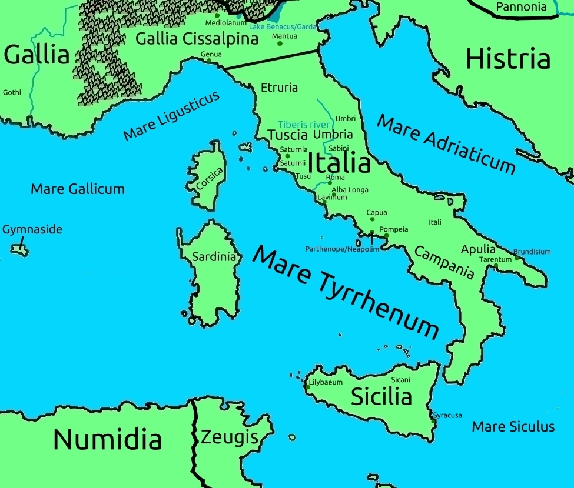

Italia
Italy was once called by it's Greek inhabitants Magna Grecia. It was also called Saturnia, from the name of a king, and it was then called Latium since that very same Saturn was kicked out by Jupiter.
So, after all that, Italy is called "Italy" because of a king of Sicily.
Italy is a vast land, from the Alps in the north south to Sicily, which is close to Tunisia. Being rich in everything, it is also a place of fertile soil, which has historically allowed an especially great degree of urbanization in the area.